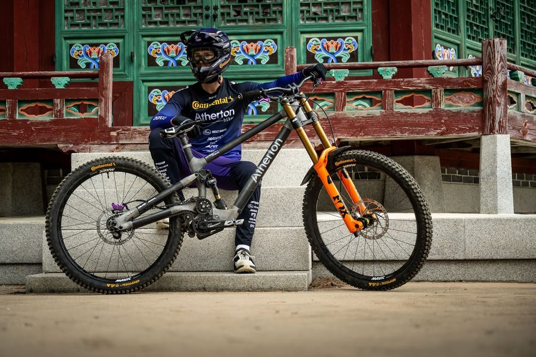
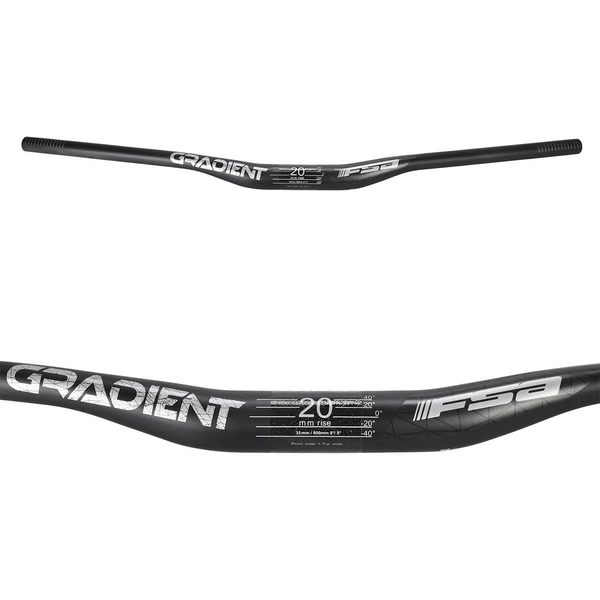
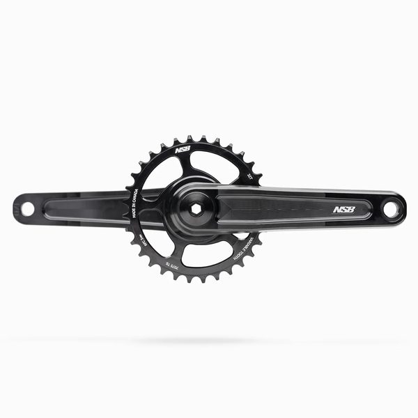

Luke Wayman
- N/A
Luke Wayman is a New Zealand downhill rider. RidersFanatics currently tracks 8 equipment items for this 2026 race setup, including Atherton A.200.G, Fox 40 Factory, Fox DHX2. The season record below contains 3 tracked results and 127 cumulative points.
2026 season snapshot
Luke Wayman is currently ranked 33rd of 42 riders in the tracked Men Elite field, with 127 points across 3 recorded starts. The strongest recorded finish is 14th at La Thuile, Italy (July). The season sample contains 0 podiums and 0 top-ten results.
Analysis is limited to results recorded in the RidersFanatics dataset and should not be read as a complete career assessment.
- 33rd
- Category rank
- 3
- Recorded starts
- 14th
- Best finish
- 127
- Points


Cockpit

Drivetrain

Hayes Dominion A4
Setup analysis
The recorded 2026 build contains 8 identified equipment items. Its documented chassis combines a Atherton A.200.G frame, a Fox 40 Factory fork, a Fox DHX2 rear shock. Other published components include Mavic MX mullet, Continental Argotal, Hayes Dominion A4. These entries describe the documented race platform; settings, compounds and prototype internals can change by event.
Page generated from the dataset updated 2026-08-10. Equipment is revised when a verifiable change is identified. Read the methodology or report a correction.
Results
| Year | Event | Result | Points |
|---|---|---|---|
| 2026 | Switzerland (June) | 26th | 35 |
| 2026 | La Thuile, Italy (July) | 14th | 55 |
| 2026 | Andorra (July) | 24th | 37 |